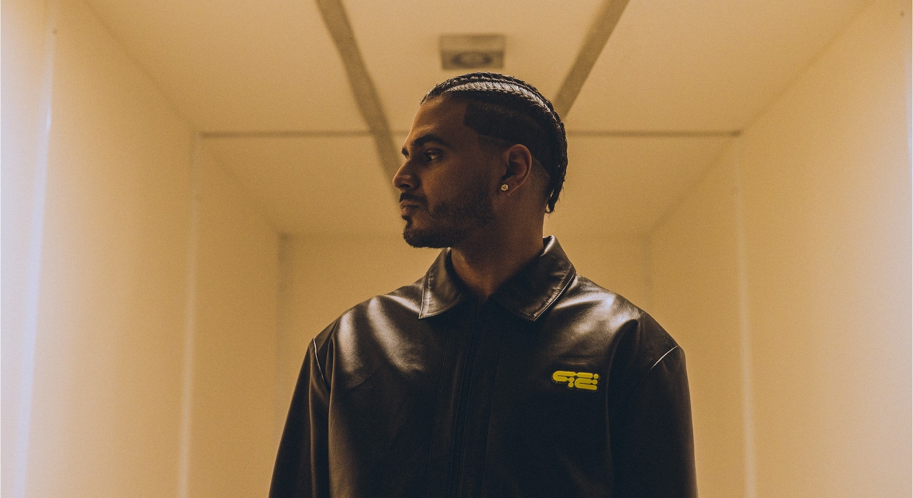
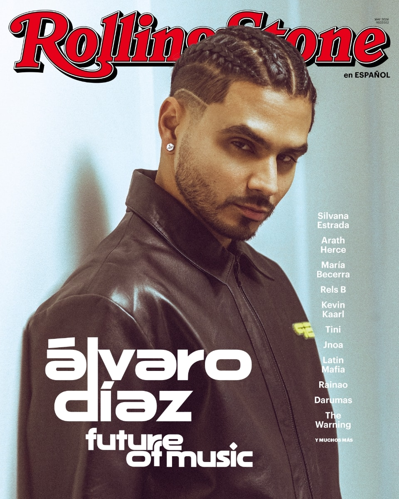

Alvarito Diaz

El puertorriqueño está cambiando el sonido de la música urbana desde una mirada alternativa y,
en el camino, busca inspirar a otros
No existe en la escena urbana otro artista como Álvaro Díaz. Desde distintos géneros, con influencias
heterogéneas, grandes conceptos artísticos y un objetivo claro, el nacido en San Juan, Puerto Rico,
en 1995, está estableciendo la guía para un futuro alterno.
Hoy se encuentra en un momento artístico envidiable. A unos días de lanzar el que considera “el mejor disco de su carrera”, el muy esperado SAYONARA, Álvaro se sentó a platicar con ROLLING STONE en Español. Durante su presentación en CEREMONIA, en México, confirmó que llegaría en mayo de 2024 después de un largo periodo en el que el álbum solo existía en el imaginario de sus fans y en la enorme cantidad de comentarios que demandaban su llegada.
Aunque Díaz nunca dejó muy claro por qué SAYONARA no podía ver la luz, declaraba que no estaba en sus manos,
e inició el movimiento #FreeSayonara.
“Fue bien desesperante y frustrante. Yo siempre he dicho que lo que más feliz me hace en el mundo es sacar música, cuando yo no saco música puedo caer en un estado de depresión de cierta manera”, relata durante la charla. “Me desesperé mil veces, me cambiaban la fecha y se me atrasaba todo, de momento me seguían pidiendo un montón de cosas y se atrasaba. Ahora veo todo lo que está pasando y veo que el
hype sigue, veo lo que pasó en Ceremonia y en los festivales que hicimos en México, siento que por
alguna razón, en mejor momento no pudiésemos estar”.

El tener uno de los discos más esperados de los últimos años podría significar presión para muchos artistas, sin embargo Álvaro ha demostrado que
tiene confianza en sí mismo y sus conceptos. Sí, hay altas expectativas, pero está convencido de que las cumple.
“Yo siempre he sido un artista de riesgo”, afirma.
Canciones Famosas de Álvaro Díaz
| # |
Canción |
Álbum |
Año de Lanzamiento |
Duración |
| 1 |
Problemón (ft. Rauw Alejandro) |
Felicilandia |
2021 |
3:55 |
| 2 |
Brilloteo |
Felicilandia |
2021 |
3:19 |
| 3 |
Dime Tú |
Felicilandia |
2021 |
3:30 |
| 4 |
Todo Bien |
Díaz Antes: Amor |
2016 |
4:21 |
| 5 |
Chica Fashion |
Felicilandia |
2021 |
3:10 |
| 6 |
Carro Rápido y Lento |
San Juan Grand Prix |
2018 |
4:14 |
| 7 |
Los 90's |
Felicilandia |
2021 |
4:00 |
| 8 |
Adiós |
Díaz Buenos Díaz Malos |
2014 |
4:40 |
| 9 |
La Durango |
Felicilandia |
2021 |
3:22 |
| 10 |
Re$eña |
Díaz Buenos Díaz Malos |
2014 |
3:18 |
Wikipedia.com